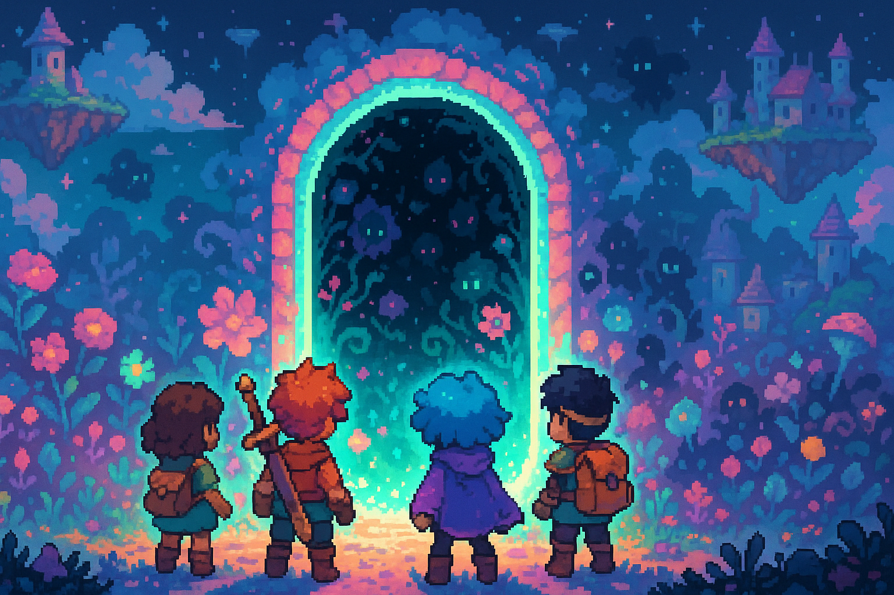

1位

DELTARUNE Chapter 5: The Field of Pink and Gold
『UNDERTALE』のToby Fox氏が手掛けるピクセルアートRPG『DELTARUNE』の最新章が、2026年6月24日にリリース！「フラワーキングダム」を舞台に、クリス・スーシー・ラルセイの3人が再び冒険を繰り広げる。既存オーナーには無料アップデートとして届き、新規購入（$24.99）でもチャプター1〜5を一気にプレイ可能。さらに次章「Chapter 6」の開発が既に進行中であることも明かされ、シリーズの完結が現実味を帯びてきた。
おすすめ理由：発売直後で今まさに話題沸騰中。無料アップデートで既存プレイヤーもすぐ遊べる太っ腹仕様。RPGファン必須の一本！